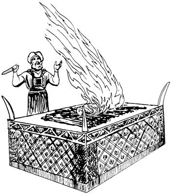

Markus
PONEKORI YUBU WALINGE YESUS SEMBE
MOME TOBOG YUBU
Markusti mome tobogne sembe tibin nenerop yubu palilamap
Markus Yubu ane Yohanes-Markus as Yerusalemneri mome tobog. Yohanes-Markus poneko Petrus, Yesus neleptopne, elkae wamog. Wamogti, Petrusti Yesus sembe ambarelamsiogne ka'ebaogti, mome tobog.
Markusti, “Yesus etne, huro el so'oag kamag uro wamori, nimiri malia uropne sembe seklero tebaonge sembe yog nimi babe el taukang,” aro mome tobog.
Markus pone mome tolamogti, saeri mome tobog. Nomorap pasalap tamap kom-kom mome tobog. Amik nimi orangeri agha, “Pasal ane, nomor ane, tam ane senelamukang,” aro a'ero-a'ero karepto pibek.
Markusti mome tobog yubu tam saekpare karebiagha a'ero-a'ero palilamap
1:1-13 anena, Allahri Elme Yesus wepto poghogne lag taogha sembe mome toro pibog.
1:14-9:50 anena, Yesus mog so'o Galilea wamogha Allah yubu ambarelamsiogti, nimi wali nenelamsiogha sembe mome toro pibog.
10:1-52 anena, Yesus mog so'o Galilea liogha as Yerusalem sip palamogha sembe mome toro pibog.
11:1-12:44 anena, Yesus as Yerusalem wa'iogti, Allahri Mem Ae Allah yubu ambarelamsiogha sembe mome toro pibog.
13:1-37 anena, Yesusti tam amik uro yabilulne sembe ambarelamsiogha sembe mome toro pibog.
14:1-15:47 anena, Yesus seklebaogti, tebaogha sembe mome toro pibog.
16:1-20 anena, Yesus nen kamag taogti, imag ingkiogha sembe mome toro pibog.
Yahudi nimi sembe palilamap
Allahri samenag Abrahamag, “Anenge asap, ankaboap, anenge so'oap laplobi agha Nari mog so'o ambatkenenge nhonag pululam. Andi mangarobari mangkahyikne tanekori mangkahyikne maikno taukang,” aro ambarog (Sumbaogha 12:1-2). Ambarogti, amik sum babe Allahri nen tipto ambarelamogti, “So'o Kanaan ane an nimi sekelanan nang saog uro wamlam aghana, an anisag yabo sembe so'o ane ‘Ngai taukang,’ aro tatsineri, sin sembe Sikini Allah Na wamnun,” aro salag lekto ambarog (Sumbaogha 17:8). Ambarogne ane sik uro yabiogpa, sikin maikno taekti, mog so'o aneag wamek. Abraham Ibraninge wamogti, elme Isak mangkaogpa, Isak elme Yakub mangkaogpa, amik sum Yakub sembe Allahri elag si nhon Israel engero pibog. Ane sembe, Abraham ponekori mangarobari mangkahiekne sembe Ibrani nimi babe, Israel nimi babe alamsiekpa, amik sum Yahudi nimi babe engero yabiog. Sindi mog ane samenag mog so'o Kanaan alamek.
Allahri Israelnangag, “Nari aruksirop yubu ka'eamlulom!” aro ambatsiog aghana, sikin ka'ebaek kom. Sin ka'ebaek komne sembe Allah Eldamneri yubu silimu tiptopnang Israelnang anabiagha weplamsiogti, sikinkaboag “ ‘A'undi mali-malia ulamlomne lipsimundi, Allah yubu ka'eamlulom,’ aro ambarelamsululom,” aro pogsiog. Pogsiog aghana Israel nimiri Allah yubu silimu tiptopnangdi samenag ambarelamsiek yubu ka'elamek komdi, nenne mali-malia ulamsiekti, nenne nimi ya'ag olamsiek. Undop aghana Allahri samenag Eldi yubu silimu tiptopnang pere agha Israelnangag, “Nari me mog so'oag nimi taulbahileri, saelbamsilul aro pognun,” aro salag lekto ambatsiog.
Wene aro ambatsiogti, Allahri elme Yesus so'oag nimi sembe poghog aghana, Israel nimi eldi yubu babe ka'elamek komdi, obek. Israel nimiri samenag Allah Elme Yesus obek aghana, Allahri Yesus nen kamag nembaog. Wene Allah yubu walinge anena, nu mog so'oag nimiri mali-malia ulamapne sembe Allahri nu opsinep aghana, nu mog so'oag nimi sembe o'ona senelamsiogti, Allahri Elme Yesus mog so'oag nimi sembe poghog. Poghogpa, Yesus nunag yaogpa, nuri mali-malia ulamapne sembe Allahri nu ya'ag opsinep aghana, Yesus nu tebanep nimi sembe lunumna taogpa, nimiri obek. Obek aghana, Allahri nen kamag nembaog. Yubu wali sirikne nene sembe, nimi maiknori Yesusag wana saingnia sikne aro seneraglamikti, tala-tala urop nimi ambatto tongolamsiang.
Israel nimiri samenag Allah yubu silimu tiptopnang ka'eban koma mali-malia ulamsiekne sembe babe, Allah Elme obekne sembe babe, Yesusti Israel nimi nubu nangag sunumna yubu nhon ambarelamsiog. Ambarelamsiog yubu ene Markus yubu mome tobogne wene palilamapne kembiagha pasal 12 keknep.
Roma nimi sembe palilamap
Yesus so'oag wamoghag Yahudi nimi sindi mog so'o wamek aghana, sikin mo sektop kom. Yahudi nimi wamek mog so'o eneko Roma nimiri samenag wamek nimi luknubahiekti, saelba ulamsiek. Roma nimi sikini nimi nubunge Kaisar pone as nubunge Roma weag wamog. Wamogti, tala-tala wamek nimi mog so'o maikno saelbamogpa, mog so'o wamek nimi taneko eldi yubu ka'elamekpa, Yahudi nimi babe el umag wamek. Tam ane sembe Yahudi nimi karong senelamekti, “Mo seksebeba, nimi nubunge nuringe mo wamsori, nu Yahudi nimi saelbamsiso,” senelamek. Undo senelamek aghana, Roma nimi sikini nubunge Kaisar ponekori, “Israel nimiri nari yubu ingisaplobikagti, yae wamlulom!” aro yin saleropnang maikno Yahudi nimi wamek so'oag pogto sekitsiog.
Yesus mangkaogpa, eldi ua ulamogne kembiag agha Yahudi nimiri, “Roma nimi yaglambahileri, el agha nuri nimi nubunge wamlul,” sembaek. Ane sembe Yesus pham keledai me alibag pulingkina as Yerusalem wa'iogpa, Yahudi nimi maiknori, “Wene el nuri nimi nubunge taleri, Roma nimi yag lambahilul,” senelamek (Markus yubu pasal 11 nene agha keknep). Undo senelamek aghana, Yesusti “Roma nimi yaglambahineba, Yahudi nimi mo sekukang,” aro Yesus so'oag yaog kom.
Samenag Musari mome tobogne ambatsiropnang sembe palilamap
Samenag Allahri, “Undo-undo unulamlulom,” aro aruktop yubu Musa ambarogpa, Musa ponekori nen tipto Israel nimi sembe mome toro pibog. Amik sum Israel nimiri Musari mome tobogne kilbiagha yubu kiki telekto, “Undo-undo unualulom,” aro ambarelamsiek. Samenag Musari mome tobogne sembe babe, amik nimiri “Undo-undo unualulom,” arop yubu babe, Musa yubu ambatsiropnang el uro wamek. El uro wamekpa, Allah yubu lerop aeag nimi poloro winiltalamekag Allahri aruksirop yubu neneap, nimiri, “Undo-undo unualulom,” arop yubu eneap ambarelamsiek.
Samenag Musari mome tobogne ambatsiropnangdi, “Allahri so'oag nimi taulbahileri, saelbamsiilulne nhon poglul,” aro el uro wamektiog, sin Yesus sembe, “Allah elme,” aro sik senelamek komdi, wa'epto ebek.
Farisi nimi sembe palilamap
Allahri Musaap, Allah yubu silimu tiptopnangap pere agha eldi aruksirop yubu Israel nimiag ambarelamsiog aghana, amik sum Israel nimiri, “Nen undo-undo unualulom,” aro ma'arop yubu babe maikno ambarelamsiek. Farisi nimiri sop-sop, “Undo-undo unualulom,” arop yubu ene senelamekti, ul palamek. Sin Farisi nimiri seneraglameknena, “ ‘Undo-undo unualulom,’ arop yubu ene sunsunum uro ulapmun kom tanena, Allahri a'un sembe karong sembahilul,” senelamek. Undo senelamekti, ambarelamsiekpa, yog nimiri sin Farisi nimiri ul piroba kemelamsiekti, maiplamsiek.
Yesusti sin Farisi nimiag, “A'un nimi wana waknang wamlom,” seogti, nen tipto ambarelamsiogti, “Nimiri ma'aro, ‘Undo-undo unualulom,’ arop yubu mikip uro saelba ulamlom aghana, Allahri aruksirop yubu sembe teba'en nenero ul palamlom,” seog. Tam nene sembe, Markus pasal 7:6, 8 kembiagha el tanep.
Memnang Allah sembe pairopnang sembe palilamap
Memnang Allah sembe pairopnang Allah Eldamne Mem Ae nubungeag Allah yeplamekti, Allahap nimiap anabiag uropnang wamek. Nimiri “Allah omekto tarel pinun,” aro ulamekti, wali-waliaba memnang tarel piekti, memnang saeag tarelamsiek. Tarelamsiekpa, memnang Allah sembe pairopnangdi wali-waliaba Allah sembe aukag talamek. Yahudi nimiri pham-domba, pham-sapi, pham-kambing, mem winang tarel palamsiekpa, memnang Allah sembe pairopnangdi oro aukag talamek. Yahudi nimiri tena babe tarel palamsiekpa, Allah sembe aukag talamek.

Memnang Allah sembe pairopnang taneko Allahap nimiap anabiag uropnang wamekti, awe yogne salelamek. Awe salelameknena, Allah yubu ambarelamsiekti, molona babe nimi sembe Allahag molbarelamsiek. Memnang Allah sembe pairopnang wameknena, memne Allah sembe pairopnang sikini nubunge nhon wamogpa, memnang Allah sembe pairopnang sikindoyabo babe wamekpa, memnang Allah sembe pairopnang umagnang babe wamek.
Allahri Mem Ae sembe palilamap
Allahri Mem Ae mog so'o Israel as nubunge Yerusalem anekoag nhonog wamog. Ae ane kembi agha nubu sirik ae wamog. Allahri Mem Ae anekoag ae lom maikno sobaekti, aramag sip babe a'ero-a'ero nembaek. Ot Yahudi sisa nimi aghabog Allahri Ae aramag wa'alamek. Yahudi sisa kom nimi Allahri Ae peagmanag seka ulamek aghana, Yahudi sisa nimiri leka solingkieka Yahudi sisa kom nimi iriklamsiek. Yahudi sisa kom nimiri “Allahri Ae peramag wa'inun,” aro irikna ane philamek tanena, Yahudi nimiri ya'ag olamsiek.
Nimiri, “Allahag yubu lero Allah omeklamukap,” aro Allahri Mem Ae aramag palamekti, wali-waliaba Allah sembe tarel palamek. Allahri Mem Ae tanekoag memnang Allah sembe pairopnangdi wali-waliaba Allah omekto aukag talamek.
Yahudi nimiri Allah yubu lerop ae sembe palilamap
Yahudi nimiri as tala-tala wamekag nimi poloro winirobag Allah yubu lerop ae nhon-nhon solamek. Yahudi nimiri senelameknena, “Yahudi nang sa'obare nikag wamebe tanena, Allah yubu lerop ae sobanep aghana, nengabo sa'obare wamebe kom tanena, Allah yubu lerop ae sobaukap kom,” senelamekne sunsunum uro ul palamek.
Yahudi nimiri Allah yubu lerop sum talamogpa, Yahudi nimiri Allah yubu lerop aeag wa'alamekti, Allah yubu ambarelamsieka ka'elamek. Ora sum babe sindi mabo Allah yubu lerop aeag wa'alamekti, mome toroba kembanepneap, pimnepneap sembe el talamekti, Allah Yubu babe usoghag tobongkia wanaag agha el uro lelamek. Yesusti babe Allah yubu lerop aeag wa'ina Allah yubu ambarelamsiog.
Yesusti wepto pogsiognang sembe palilamap
Nimi aobare Yesusti wepto yopsiognena, “Sin nanap nhon wameberi, Allah yubu ambarel palamsiberi, phia nimi kulomag wamikne yag lanalamsukang,” aro wepto pogsiog. Yesusti samenag wepto pogsiognang anena:
Simon Petrus
Zebedeus elme Yakobus
Yakobus elipsae Yohanes
Andreas
Pilipus
Bartolomeus
Matius
Tomas
Alfeus elme Yakobus
Tadeus
Simon mo sekukap aro yin saleropne
Yudas Iskariot
Sin nimi aobare abini wepsiog. Yesusti sin wepto pogsiogne sembe Markus yubu pasal 3, ayat 13-19 kembiagha, Yesusti sin aobarenang wepsiogha el tanep.
Ane sembe sin aobarenang aneko Yesus ilipsabo taptopne kom, aghana Yesusti wepto pogsiognang alamap. Yesus ilipsabo taptopne babe, ilipsa'elabo taptopne babe wamek aghana, sin Yesus sopsop neleplamek kom. Markus pasal 6 kembiagha, Yesus ilipsabo taptopneap, ilipsa'elabo taptopneap sembe el tanep. Yesus ilipsabo taptopne sina Yakobus, Yoses, Yudas, Simon wamek aghana, sinna Yesus anam teban komag wameknena, sindi Yesus neleplamek kom. Ane sembe aobarenang sembe palilamapne nene Yesus ilipsabo alamap kom. Yesus ilipsabo a'ero, Yesus neleptopnang a'ero, Yesusti wepto pogsiognang babe a'ero wamla.
Tibin nenerop yubu komopto pibap.
Markusti Yubu Walinge Yesus sembe mome tobogha